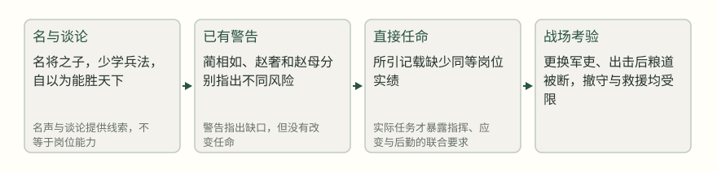
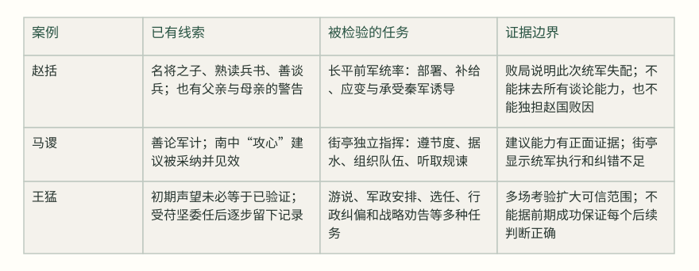

长平出兵前，赵王已经得到一个看似有力的答案：秦国反间说，秦军怕的只有马服君赵奢的儿子赵括；廉颇容易对付。赵王于是用赵括替下廉颇。这个决定并不是在完全没有警告的情况下作出的。蔺相如说赵括只是读过父亲的兵书，不知随机应变；赵奢生前也说过，儿子把危险的战争说得太轻易。可赵王相信了“名”——名将之子、熟读兵法、声望已经在场。[1]
问题因此不是古人有没有识人术，而是证据有没有对准任务。会讲一个问题，能不能在变化中决断？有过相似的履历，能不能承担更大的责任？一条成功建议，能不能证明独立指挥、组织执行和管理后果？《资治通鉴》的三个案例，分别把这些证据缺口和补足过程摆在我们面前。它们也提醒我们：判断必须提前发生，不能等结果出来后，把胜败倒写成才与不才。
一、赵括：名声替代了岗位证据
赵括的故事常被压缩成“纸上谈兵”，但《通鉴》记录的细节比这个成语复杂。赵括自少学兵法，自以为天下无人能敌；他与父亲赵奢谈兵时，赵奢不能辩驳，却没有因此称许他。赵奢向妻子解释，兵是死地，赵括说起来太容易。这里同时有两种事实：赵括确实能谈兵，父亲也确实听出这种谈论与将兵之间的差别。[2]
更有力的证据来自赵括母亲的比较。她没有说儿子一无是处，而是回忆赵奢做将时，把赏赐分给军吏士大夫，受命后不问家事；赵括受命后却把金帛藏回家，并忙着买田宅。她所报告的不是抽象性格，而是同一家庭中两个人在“即将成为将领”时对资源和关系的不同处理。赵王仍说“吾已决矣”，并接受了母亲提出的免责请求。[3]
这一步的判断失误，不只在于选了一个会谈兵的人，还在于把几个不能互相替代的信号拼成了“已经验证”。名将之子的履历证明他熟悉军旅故事，却不证明他能在粮道、地形和敌军诱导同时变化时保持判断；私人场合的辩论足以展示表达和记忆，却不等于可以组织一个大军。秦国反间、廉颇坚壁不出，以及朝廷对议和与求战的争论，至少构成赵王当时面对的解释框架；至于他究竟主要被哪一项推动，原文没有直接说明，所谓“更愿意相信一个能够马上改变局面的候选人”只是作者对顺序的推断。[1] [4]
赵括任命中的证据缺口（分析示意）


赵括到军后“悉更约束，易置军吏，出兵击秦师”。秦军则隐藏白起为上将军，先佯败，再断赵军后路和赵壁之间的通道。赵军粮道断绝，秦王又从河内征发十五岁以上民众，截赵国援兵和粮食。长平的岗位并不是一次兵法问答，而是一个同时要求识别诱敌、控制节奏、保持补给和处理救援不确定性的系统任务。[5]
赵括后来亲自率锐卒出战而死，赵军大败。这个结果足以说明他在这次统军中没有完成任务，却不能证明他此前所有谈论都是空话，更不能把赵军的败亡全部归到他一人身上。原文同时记载廉颇被替、秦军筹划、粮道被断、赵国请粟于齐而未获，周子还批评齐王不救赵。把这些条件删掉，才会得到一个过于整齐的“庸人误国”故事。[6]
二、马谡：一条好建议，不能替代另一种能力
马谡比赵括更能说明“不能以后果抹掉才能”。诸葛亮南征时，马谡送行数十里，提出南中仗险远而反复，若只攻城杀戮，明日仍会再叛；不如“攻心为上，攻城为下”，使其心服。诸葛亮采纳了这个建议；同段记载孟获在七纵七擒后说“南人不复反矣”，这是孟获当时的判断，不是作者可直接验证的因果结论。卷七十随后又记“自是终亮之世，夷不复反”，那是《通鉴》对后续局面的记载，不能简化为马谡一条建议单独造成的结果。胡三省在卷七十一此段注中说，这正是马谡善于论军计的地方。[7] [8] [9] [10]
这条证据很重要，因为它反驳了把马谡一概说成“只会空谈”的简化。马谡能够从地理距离、统治成本和后续反复中提出一个政治军事结合的方案；至少在这项任务上，他的观察和建议有质量。但建议者与独立统军者面对的任务并不一样。前者可以集中分析问题、提出原则，后者还必须把命令转成位置、队形、补给、侦察与部下协作，并在信息不完整时承担立即后果。[8]
诸葛亮其实收到过两种不同的信号。一方面，马谡“才器过人，好论军计”，诸葛亮与他谈论常常从白天到夜晚，说明他长期展现了可吸引人的思辨能力；另一方面，刘备临终直接提醒“马谡言过其实，不可大用”。这不是“聪明”与“愚笨”的二选一，而是对证据适用范围的警告：知道一个人善于讨论，不能自动扩大为知道他能统率前军。[11]
街亭的记录把这个缺口具体化了。马谡违背诸葛亮节度，行动烦扰，舍水上山，不下据城；张郃截断汲水道路，进攻后，军队离散。原文没有替我们解释他的全部动机，也没有说他不知道水源的重要性；它只明确记录了部署、敌方行动和后果。由此可以较有把握地说，马谡在这次任务中没有把统军所需的地形、供水与命令执行结合起来。[12]
王平的对照又使判断更精确。马谡失败前，王平多次规谏，马谡没有采用；失败后，众军星散，王平率领的一千人击鼓自守，使张郃疑有伏兵而不逼近，王平才逐步收拢各营遗散部众。诸葛亮后来提升王平，并不只是奖励“没有输”，而是记录了他在危局中保持队伍、利用敌方不确定性的具体表现。它不能证明王平凡事更强，却为“现场组织与纠错”提供了比名声更接近岗位的证据。[13]
三案中的能力与证据：同一个“能”不能覆盖全部岗位


三、王猛：未显露者怎样在考验中变得可判断
如果只有赵括和马谡，读者容易得到一个消极结论：先别相信任何漂亮的谈论。王猛提供了更有用的反例。苻坚在关东初平后，认为守令应该得人，令王猛“便宜简召英俊”，补任六州守令。这不是给一个陌生人一个模糊的“重任”就结束，而是让他在选人、配置地方行政和承担后果的连续工作中显示判断。原文随后列出他所荐的关东士望，说明成果不只在个人名声，也在于他能否发现并安置合适的人。[14]
王猛还在具体外交和军事行动中留下了不同类型的证据。他攻破张天锡部将阴据后，苻坚让他写信劝凉州称藩；信中并非只夸秦军强大，而是比较凉土实力、秦国德威与进退后果，给对方留下“自求多福”的计算空间。天锡因此遣使谢罪称藩。这个结果不能证明一封信单独造成了称藩，秦军前期战果和力量对比同样在场；但它至少显示王猛能把军事事实转换成对手听得懂的政治选择。[15]
更小的一件事反而很能说明“实际考验”的累积。秦王苻坚在邺地打猎，久而忘返，王洛叩马进谏，指出天下和太后的责任。苻坚停止打猎；王猛随后说，打猎确非急务，王洛的话不可忘。王洛得到赏赐并被任为左右箴谏。王猛在这里没有抢去王洛的功劳，而是把一次临时进谏转成可持续的制度记忆。它不是战场天才的证明，却显示出行政判断和纠偏能力。[16]
苻坚后来越来越扩大对王猛的委托：371年让他处理六州，372年任为丞相、中书监、尚书令、太子太傅、司隶校尉。这个信任并不能仅归结为苻坚“看人准”，因为记载中间有任务、结果、荐士和持续任用的链条。苻坚自己说，取才不易，守住任命也难；若任非其人，祸患不只由君主承担，也由王猛承担。无论这段话带有怎样的君臣亲近，它都点出委托的本质：职位扩大，责任范围也扩大。[17]
王猛的边界同样不可省略。慕容垂投奔前秦时，苻坚重礼相待，王猛却警告慕容垂父子像龙虎，不能驯服，借助风云便不可复制，主张及早除去。苻坚没有采用。本文不把这段材料延伸成对后续前秦局势的完整解释：它不能证明王猛的方案必然正确，也不能把苻坚未听劝的任何后来结局倒过来证明王猛预见了一切。这里能确认的是：他的判断抓住了“能力越强、越难控制”的政治风险；最终会怎样，仍受其他行动者和时势影响。[18]
临终时，王猛又劝苻坚不要把东晋作为主要目标，认为鲜卑、西羌才是长期祸患，应逐步处理。此言说明一个经过多次成功考验的人，也只能就当时可见的结构提出判断，不能替未来提供保证。王猛的价值因此不在一个神奇的“识人答案”，而在一套逐步扩大证据的过程：让一个尚未显露的人先承担可观察的任务；任务结果合格，再扩大权限；每次扩大都重新检查能力是否适配。[19]
四、把“这个人行不行”改成“他在哪个环节行”
三案放在一起，最先要改掉的是问题的语法。赵括不是简单的“有才”或“无才”，而是有谈兵和名门履历，却没有在长平统军所需的联合任务上留下足够证据；马谡不是没有能力，而是建议能力的证据不能覆盖独立指挥；王猛也不是一开始就被结局认证的天才，他的可信范围是由一次次不同任务逐步扩大的。识人若只问“他是不是能人”，就会把不同能力揉成一个印象。[20]
更稳妥的观察，可以从四个问题开始。第一，眼前岗位真正要完成的动作是什么，是解释、谋划、部署、执行、协调，还是在失败后收拢残局？第二，现有证据直接覆盖哪一个动作，哪些只是相近的履历或漂亮的表达？第三，能不能先给一个代价可控、结果可观察的任务，并规定何时复核？第四，若结果不理想，是能力、资源、命令、对手，还是目标本身出了问题？这四问不会消除不确定性，却能阻止一次印象自动变成全面授权。
核查也有成本。等待试验可能错过时机，拆分授权可能让行动变慢，反复复核也可能损害关系；赵王面对长平并非在实验室里挑选候选人，诸葛亮也必须在北伐压力中用人。因而“先验证”不能被写成永远安全的处方。真正需要的是让授权范围与证据强度相称：尚未验证统军，就不要把会谈兵直接换成前军总指挥；已经证明能提出建议，也仍要为执行阶段设置不同的观察点；对王猛那样的未显露者，则要在承担任务的同时保留纠错和收回权限的机制。
还有一个常被忽略的环节：记录失败时，必须把失败拆成可归责的动作。马谡失守街亭后，诸葛亮诛马谡、夺黄袭等兵，同时提升王平；这不是把一个人永远贴上“无能”标签，而是把违节度、失去水源、未听规谏和残军收束分别看待。赵括之案也一样，秦军的隐蔽部署、赵国的粮援困境与赵括出击的选择，应当放在同一张事实表上。这样做并不减轻责任，反而让下一次任用知道究竟要补哪一种能力。[5] [12] [13]
相反，成功也要拆开。王猛劝降凉州、荐举关东士人、纠正苻坚畋猎，各自证明的能力并不相同：前者偏向把力量转成说服，次者偏向识别和配置人，后者偏向制度纠偏。它们叠加后，才足以支持较大范围的信任；即使如此，临终劝阻伐晋仍然是一项需要重新判断的战略意见。把成功拆开，既能防止崇拜，也能防止因为一个后来失误而否认此前真实存在的本领。[14] [15] [16] [19]
《通鉴》并没有告诉我们只要找到某种测验，就能准确预测一个人的全部表现。它提供的是更困难也更诚实的判断：能力总是对任务、约束和时间而言；一个人在一种场景中可靠，不等于在另一种场景中也可靠；一个错误结果也不能抹掉此前已经显示的能力。把谈论、履历、建议、执行和纠错分别记录，等待证据覆盖到真正要交付的任务，我们才有可能把“好印象”慢慢变成可检验的信任。
来源与证据范围
- 卷5 · 公元前260年条 · 本年段落2（正文 · 阅读原文）
赵王遂以赵括代颇将。蔺相如曰：“王以名使括，若胶柱鼓瑟耳。括徒能读其父书传，不知合变也。”
支持：赵王以名任赵括，蔺相如指出读父书不等于知变。
限制：只支持蔺相如的判断及任命事实，不单独证明赵括实际能力的全部范围。 - 卷5 · 公元前260年条 · 本年段落2（正文 · 阅读原文）
赵括自少时学兵法，以天下莫能当；尝与其父奢言兵事，奢不能难，然不谓善。
支持：赵括确有学习兵法和谈论能力，但赵奢未因此称善。
限制：“不能难”是谈论场景，不等于完整测验；不能由此推出赵括一无所长。 - 卷5 · 公元前260年条 · 本年段落2（正文 · 阅读原文）
今括一旦为将，东乡而朝，军吏无敢仰视之者；王所赐金帛，归藏于家，而日视便利田宅可买者买之。
支持：赵母以赵括受任后的行为与赵奢为将时的行为作比较。
限制：这是赵母的上书和判断，不能把她的比较直接当作完整心理诊断。 - 卷5 · 公元前260年条 · 本年段落1（正文 · 阅读原文）
赵军数战不胜，止一裨将、四尉。赵王与楼昌、虞卿谋，楼昌请发重使为媾。
支持：赵王面临连续失利和议和压力，任命发生在具体政治军事约束中。
限制：不支持把任命原因简化为单一反间；需与段1的秦国反间并读。 - 卷5 · 公元前260年条 · 本年段落3（正文 · 阅读原文）
赵括至军，悉更约束，易置军吏，出兵击秦师。武安君佯败而走，张二奇兵以劫之。
支持：赵括到任后的部署和秦军诱敌、断后行动。
限制：只截取战事关键节点，不能单独承担整场长平战争的全部因果。 - 卷5 · 公元前260年条 · 本年段落3（正文 · 阅读原文）
赵人乏食，请粟于齐，王弗许。
支持：赵军困境还涉及粮食和齐国拒绝援助。
限制：周子评论及齐国行动是额外背景，不能据此免除赵括的指挥责任。 - 卷70 · 公元225年条 · 本年段落3（正文 · 阅读原文）
夫用兵之道，攻心为上，攻城为下，心战为上，兵战为下，愿公服其心而已。
支持：马谡提出南中攻心建议，诸葛亮采纳。
限制：建议及采纳事实不等于马谡亲自统率后续全部行动。 - 卷70 · 公元225年条 · 本年段落8（正文 · 阅读原文）
七纵七禽而亮犹遣获，获止不去，曰：「公，天威也，南人不复反矣！」
支持：南中行动以收服人心为取向，支持马谡建议有实际政策结果。
限制：结果由诸葛亮及多支部队共同造成，不能独归马谡。 - 卷71 · 公元228年条 · 本年段落5（胡三省注 · 阅读原文）
〔以孔明之明略，所以待谡者如此，亦足以见其善论军计矣。观孔明南征之时，谡陈攻心之论，岂悠悠坐谈者所能及哉！〕
支持：胡三省据诸葛亮重用马谡及其南征建议，认为这足见马谡善论军计。
限制：这是胡三省的史家注释，不是《通鉴》正文的直接事实，也不能证明马谡适合所有军事岗位。 - 卷70 · 公元225年条 · 本年段落9（正文 · 阅读原文）
自是终亮之世，夷不复反。
支持：《通鉴》记载诸葛亮在世期间南中不再反叛。
限制：这是后续史书叙述，不能与孟获当时所言混为一谈，也不能据此证明马谡建议是充分或唯一原因。 - 卷71 · 公元228年条 · 本年段落5（正文 · 阅读原文）
马谡，才器过人，好论军计，诸葛亮深加器异；汉昭烈临终，谓亮曰：马谡言过其实，不可大用，君其察之！
支持：马谡的谈论才能与刘备关于不可大用的警告并存。
限制：刘备警告的具体依据未在此段展开，不能扩写为未记载的事例。 - 卷71 · 公元228年条 · 本年段落6（正文 · 阅读原文）
谡违亮节度，举措烦扰，舍水上山，不下据城。张合绝其汲道，击，大破之，士卒离散。
支持：街亭中马谡违节度、舍水上山，汲道被断后败散。
限制：支持此次统军失误，不证明马谡在所有军事任务中都无能力。 - 卷71 · 公元228年条 · 本年段落7（正文 · 阅读原文）
谡之未败也，裨将军巴西王平连规谏谡，谡不能用；及败，众尽星散，惟平所领千人鸣鼓自守，张合疑其有伏兵
支持：王平曾规谏，败后守住部众并收拢残军。
限制：王平的表现是这次危局中的对照，不能推出他在其他场景必然更优。 - 卷103 · 公元371年条 · 本年段落3（正文 · 阅读原文）
坚以关东初平，守令宜得人，令王猛以便宜简召英俊，补六州守令，授讫，言台除正。
支持：苻坚给王猛具体的选任和地方行政任务。
限制：“英俊”是当时政治用语；不能直接等同现代才能测评。 - 卷103 · 公元371年条 · 本年段落10（正文 · 阅读原文）
因命王猛为书谕天锡曰：「昔贵先公称藩刘、石者，惟审于强弱也。
支持：王猛把实力和政治后果写入劝降信，天锡随后称藩。
限制：称藩还受秦军战果和实力对比影响，不能把信件视为唯一原因。 - 卷103 · 公元371年条 · 本年段落20（正文 · 阅读原文）
王猛因进言曰：「畋猎诚非急务，王洛之言，不可忘也。
支持：王猛把一次劝谏转为制度性记忆，苻坚随后奖赏王洛。
限制：支持行政判断和纠偏的一例，不等于所有政策都因此稳定。 - 卷103 · 公元371年条 · 本年段落31（正文 · 阅读原文）
夫取之不易，守之亦难，苟任非其人，患生虑表，岂独朕之忧，亦卿之责也，故虚位台鼎而以分陕为先。
支持：苻坚说明扩大委托同时扩大王猛的责任。
限制：这是苻坚对王猛的言辞，含有君臣关系语境，不能当作一般制度原则的直接证明。 - 卷102 · 公元369年条 · 本年段落25（正文 · 阅读原文）
王猛言于坚曰：「慕容垂父子，譬如龙虎，非可驯之物，若借以风云，将不可复制，不如早除之。
支持：王猛提出对强力外来人才的政治风险判断。
限制：苻坚未采纳；后果不能反推王猛方案必然正确。 - 卷103 · 公元375年条 · 本年段落4（正文 · 阅读原文）
晋虽僻处江南，然正朔相承，上下安和，臣没之后，愿勿以晋为图。
支持：王猛临终劝苻坚暂勿图晋，并指出鲜卑、西羌的长期风险。
限制：这是临终建议，不证明若被采纳必然改变全部后续历史。 - 卷103 · 公元372年条 · 本年段落7（正文 · 阅读原文）
秦以王猛为丞相、中书监、尚书令、太子太傅、司隶校尉，特进、常侍、持节、将军、侯如故；
支持：王猛的职责范围随着持续任用而扩大。
限制：官职扩大说明信任和授权，不等于所有能力已经被逐项验证。